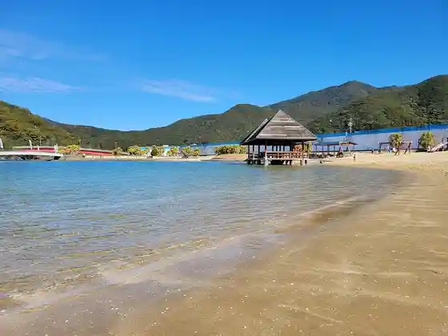
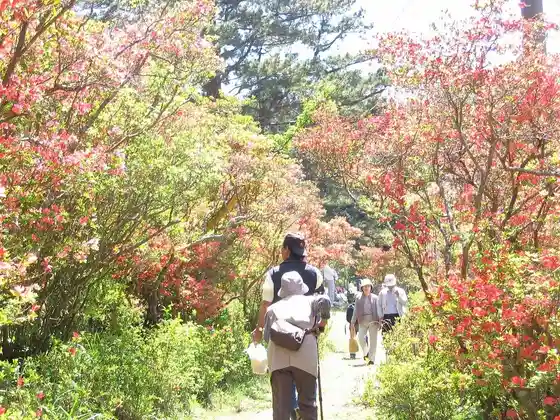
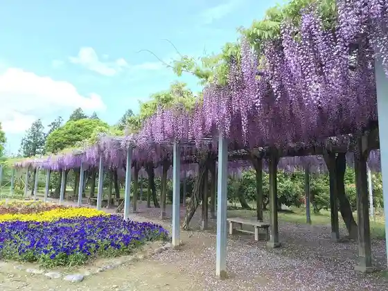
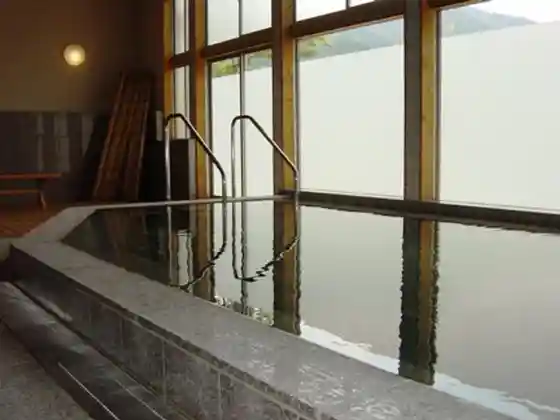

Nishiki Mukaigahama Beach
Taiki, Mie · 0598-86-2243 · Official / source link

Ohira Tsutsuji Yama
Taiki, Mie · 0598-86-2243 · Official / source link

Nohara no Village Park
Taiki, Mie · 0598-86-2243 · Official / source link

Aso Onsen
Taiki, Mie · 0598-84-8080 · Official / source link

Otaki Kyo Campground
Taiki, Mie · 0598-86-2079 · Official / source link
Taiki Tourism Association
Taiki, Mie · 0598-86-7077 · Official / source link
Ochiyama Tezukuri Bara Sono
Taiki, Mie · Official / source link
Hi no Tani Iseki
Taiki, Mie · 0598-72-4040 · Official / source link
Agonashi Jizo
Taiki, Mie · 0598-86-2243 · Official / source link
Shiki no Mori Fureai Plaza
Taiki, Mie · 0598-86-2243 · Official / source link
Otaki Kyo
Taiki, Mie · 0598-86-2079 · Official / source link
Shichi Hora Gaku Tozan Haikingukosu
Taiki, Mie · 0598-86-2243 · Official / source link
Yahashira Park (Yahashira Shrine)
Taiki, Mie · 0598-86-2243 · Official / source link
Ochiyama Kuruma Se Shinsui Park
Taiki, Mie · 0598-86-2243 · Official / source link
Minami Mata Yama Forest Park
Taiki, Mie · 0598-86-2243 · Official / source link
Kazana
Taiki, Mie · 0598-86-2243 · Official / source link
Kunimi Iwa Tozan Haikingukosu
Taiki, Mie · 0598-86-2243 · Official / source link
Taiki Nishiki Shiohama Yama Village Plaza
Taiki, Mie · 0598-86-2243 · Official / source link
Genshi no Fudo Taki Kisei Kasagi Gorge
Taiki, Mie · 0598-86-2243 · Official / source link
Roadside Station (Oku Ise Ki Tsutsu Ki Kan)
Taiki, Mie · 0598-86-3229 · Official / source link
Sankai no Sato Kisei Matsuda Shoten
Taiki, Mie · 0598-74-0271 · Official / source link
Ochiyama Zoo
Taiki, Mie · 0598-72-2447 · Official / source link
Ko Daijin Miya Betsumiya Taki Hara Miya
Taiki, Mie · 0598-86-2018 · Official / source link
Taki Hara Miya (Ko Dai Shrine Betsumiya)
Taiki, Mie · 0596-24-1111 · Official / source link
Camp Asobino
Taiki, Mie · Official / source link
Nishiki Fisshingu Park
Taiki, Mie · 080-8261-3292 · Official / source link
Ka Saka Toge (Kumano Kodo Ise Michi)
Taiki, Mie · 0597-89-6172 · Official / source link
Tsuzurato Toge (Kumano Kodo Ise Michi)
Taiki, Mie · 0597-89-6172 · Official / source link
Atama Yuki Miya Shiho Shrine
Taiki, Mie · 0598-72-2316 · Official / source link
Ochiyama Kawa
Taiki, Mie · 0598-74-0666 · Official / source link
Aso Yu Village Koryu Taiken Shisetsu
Taiki, Mie · 0598-74-2277 · Official / source link
Shidarezakura
Taiki, Mie · 0598-74-1211 · Official / source link
Sakana Sakana Nishiki
Taiki, Mie · 0598-89-4043 · Official / source link
Taiki Ochiyama B&G Kaiyo Center
Taiki, Mie · 0598-72-2201 · Official / source link
Shichi Ho no Ohatsukiitefu
Taiki, Mie · 0598-72-4040 · Official / source link
Experience Gakushu Ki no Ko Land
Taiki, Mie · 0598-74-1817 · Official / source link